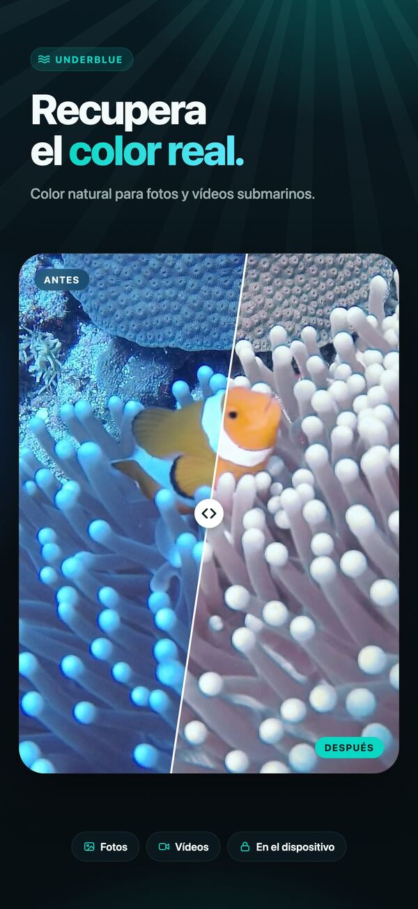
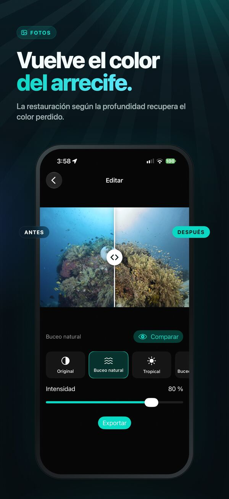
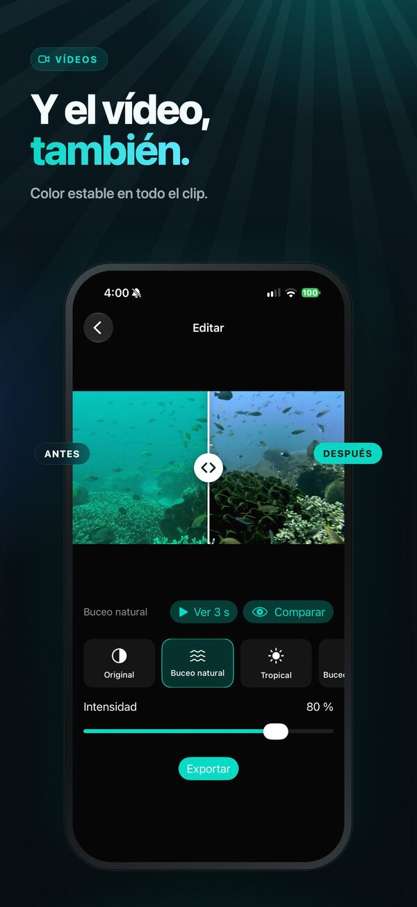
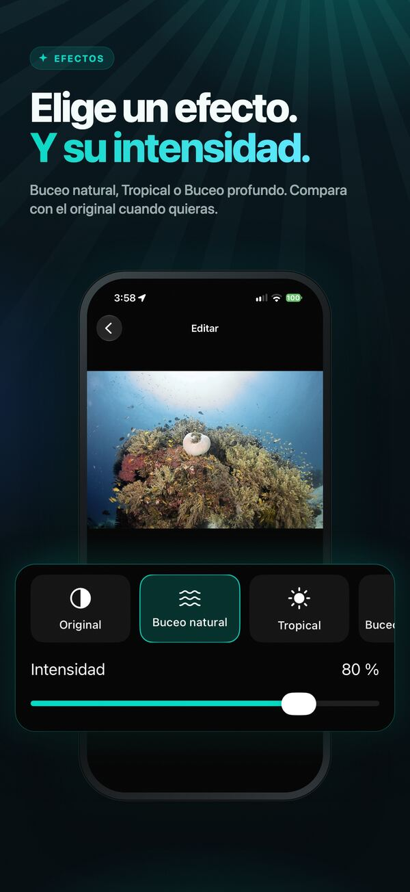
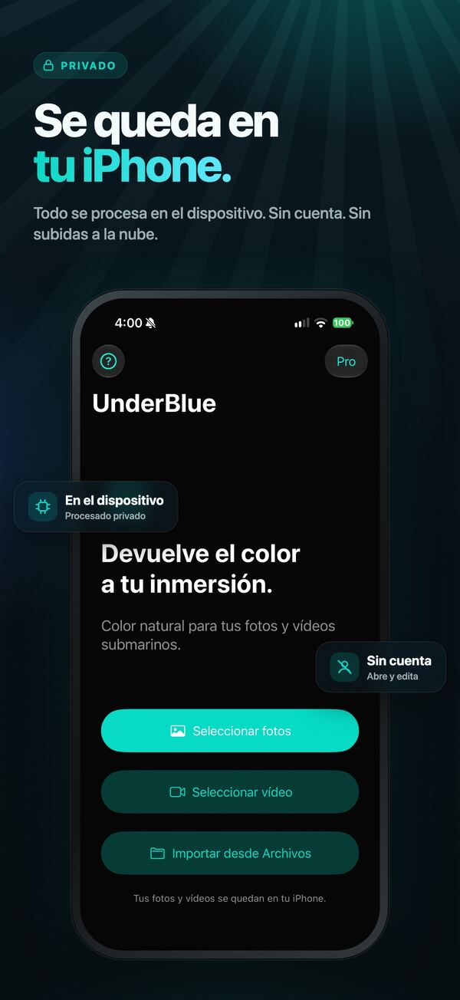

Recupera el color bajo el agua
Devuelve el color natural y la nitidez a tus fotos y vídeos submarinos. Todo se procesa en tu iPhone, de forma privada y teniendo en cuenta la profundidad.

UnderBlue devuelve un color realista y la nitidez a tus fotos y vídeos submarinos.
Elige una foto o un vídeo, escoge un efecto y compáralo con el original. Ajusta la intensidad del efecto o usa Personalizado para ajustar a tu gusto el brillo, el contraste, la saturación, la claridad y la temperatura. Por dentro, UnderBlue usa una restauración submarina que tiene en cuenta la profundidad. Así reduce la pérdida de color y el velo de las partículas en suspensión, con un resultado natural y estable de un fotograma a otro.





Funciones
- Efectos Buceo natural, Tropical y Buceo profundo
- Efecto Personalizado con cinco controles deslizantes
- Restauración de fotos y vídeos según la profundidad
- Corrección de vídeo estable, sin parpadeos de color
- Exportación de vídeo en resolución original y en 4K con UnderBlue Pro
- Salida de vídeo SDR y, si es compatible, HDR HLG/PQ
- Exportación de fotos HDR con mapa de ganancia, con UnderBlue Pro
- Importación desde Fotos, Archivos (incluidos archivos RAW de cámara) o el botón Compartir
- Conservación de la frecuencia de fotogramas, la sincronización, la orientación y el audio originales
- Procesado totalmente en el dispositivo, sin cuenta ni subida a la nube
Pruébala gratis
Prueba gratis la exportación de una foto y de los primeros 10 segundos de un vídeo. UnderBlue Pro es una compra única que desbloquea fotos ilimitadas (hasta 10 a la vez), vídeos completos, 4K y la exportación HDR cuando sea compatible.

UnderBlue está pensada para los recuerdos del buceo recreativo. No es una herramienta científica de medición del color ni de corrección de color profesional.
UnderBlue para Mac — muy pronto
Corrige toda una inmersión en un solo lote. Fotos y vídeos juntos, en tu Mac.